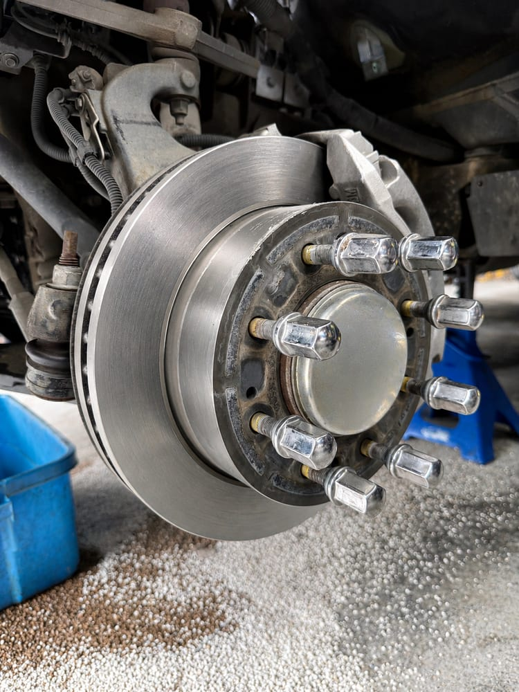

Squealing, grinding, or a soft pedal means it's time for brake repair. Our technicians replace pads, rotors, and calipers on most vehicles the same day.

Your brakes usually give you plenty of warning before they fail. Don't ignore:
We include a free brake inspection with any visit. We'll measure your pads and rotors and show you exactly what's left, so you replace brakes when they need it, not before.
Local driving is genuinely tough on brakes. The Highway 30 commute toward Portland is miles of stop-and-go that cooks pads faster than open-road driving. The hills in and around St. Helens and the grades on Highway 47 toward Vernonia mean long descents where brakes do the work gravity started. And if you tow (a boat to the ramp, a trailer to the dump, equipment for work), every stop carries extra weight your brake system has to absorb.
The wet season adds its own wrinkle: vehicles that sit for days between drives grow surface rust on the rotors, which usually wipes off in the first few stops. But a car that sits for weeks, like a second vehicle or a summer rig, can rust to the point of pitted rotors and seized caliper slides. If your parked car grinds or pulls when you finally drive it, that's worth a look before the damage spreads to parts that cost real money.
Quality pads and rotors installed with proper break-in for quiet, smooth stops from day one.
Sticking calipers, slides, and hardware replaced to stop uneven wear and pulling.
Leaking or rusted lines repaired or replaced to restore full pedal pressure.
Old, moisture-contaminated fluid flushed to protect ABS components and pedal feel.
Shoes, drums, wheel cylinders, and hardware for trucks and older vehicles.
ABS and traction control lights diagnosed with dealer-level scan tools.
"How much for brakes?" has no honest one-size answer, because a brake job can mean very different things: pads on one axle, pads and rotors on both, a seized caliper, or a rusted brake line. The price difference between the smallest and largest version of "brakes" is severalfold. That's exactly why some shops quote low on the phone and grow the bill once your car is on the lift.
We do it in the opposite order. The inspection comes first and costs nothing: we measure pad thickness and rotor condition at all four corners, check the fluid, and look over the lines and hardware. Then you get one itemized estimate for what your brakes actually need, with nothing padded on and nothing hidden for later, and the work starts only after you approve it. If half your brake system has plenty of life left, the estimate says so. We're not going to charge you to replace good parts.
Typically 30,000–60,000 miles depending on your driving. Stop-and-go commuting on Highway 30 wears pads faster than highway cruising. We'll measure yours free and give you a straight answer on remaining life.
You shouldn't. Grinding means the pad material is gone, and metal is cutting into your rotors. Every mile adds cost and reduces stopping power. Get it looked at right away.
Not always. If rotors are thick enough and not warped or scored, new pads alone may be fine. We measure them and only recommend rotors when the numbers say so.
It depends on what your brakes actually need. Pads alone cost far less than pads with rotors, and calipers or brake lines change the picture again. That's why we measure everything first and give you a firm, itemized estimate before any work starts. You approve the number before we turn a wrench.
A soft pedal usually means air or moisture in the brake fluid, a fluid leak, or a failing master cylinder. All of those reduce your stopping power. Unlike worn pads, a soft pedal can get worse suddenly, so have it checked promptly.
A standard pad-and-rotor job is a few hours, and most brake work is done the same day. Call ahead with your vehicle's year, make, and model and we'll have parts waiting when you arrive.
Quality parts that meet or exceed original-equipment specs, not the cheapest pads on the shelf, because comeback brake noise costs everyone more than good parts do. If you have a preference for a specific brand or OEM parts, tell us and we'll quote it that way.
Most brake jobs are done the same day. Call ahead and we'll have parts waiting.
Call (503) 867-0609